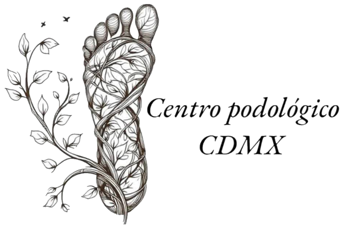
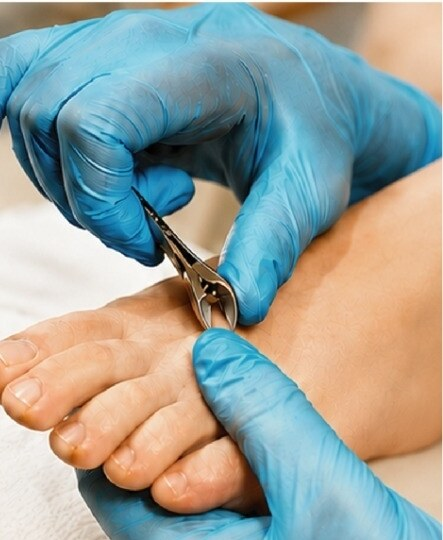

01
Atención en la comodidad de tu hogar
Sin tráfico, sin filas y sin traslados. Tu sillón favorito se convierte en el mejor consultorio para cuidar tus pies.

Preparando tu visita 0%
Atención podológica las 24 horas
Cuidado preventivo y tratamiento de callos, hongos y uñas encarnadas con higiene, precisión y trato humano. Llegamos hasta tu casa para que tú solo te preocupes por caminar sin molestias.

Nuestro enfoque
Cada paso que das lleva todo tu peso. Por eso llevamos la podología profesional hasta tu puerta: sin traslados, sin filas y sin prisas.
Por qué en casa
Sin tráfico, sin filas y sin traslados. Tu sillón favorito se convierte en el mejor consultorio para cuidar tus pies.
Material cuidado, técnica precisa y trato respetuoso en cada visita.
Llegar a un consultorio no debería ser un obstáculo para cuidar tus pies.
Escríbenos tu zona y coordinamos el día y la hora que mejor te acomode, a cualquier hora del día.
Quiero atención en casaServicio preventivo podológico
Cada visita preventiva es un recorrido completo por el cuidado de tus pies. Esto es lo que sucede, en este orden y con todo el tiempo que se necesita.
Quiero mi servicio preventivoEmpezamos mirando. Revisamos uñas, piel y puntos de apoyo para saber exactamente qué necesitan tus pies hoy.
Técnica y herramienta adecuadas para un corte limpio y recto que ayuda a evitar molestias antes de que aparezcan.
Retiramos con cuidado lo que se acumula en los bordes de la uña, una zona clave para tu comodidad.
Eliminamos la piel endurecida que hace que cada paso se sienta como una piedra dentro del zapato.
Dejamos la superficie pareja y suave, sin asperezas que se atoren en tus calcetines o en tus sábanas.
Renovamos la piel para que reciba mejor la hidratación y se vea y se sienta realmente cuidada.
Cerramos con nutrición para tu piel: una suavidad que se nota desde el primer paso después de la visita.
Cada paso cuenta
Cuidarlos es cuidarte. Por eso la podología profesional viaja hasta donde tú estás.
Tratamiento para
Cuatro afecciones frecuentes que tratamos en tu domicilio. Una valoración en casa te dice qué sigue.
Retiro de durezas y callosidades · Alivio inmediato al caminar
Esas durezas localizadas que duelen al caminar o al roce con el calzado. Las valoramos y las tratamos con técnica suave y precisa, sin que salgas de casa.
Quiero aliviar mis callosDecoloración y engrosamiento · Tratamiento profesional a domicilio
Uñas amarillas, opacas o con cambios de color. Valoramos su estado y las cuidamos con atención profesional y mucha higiene.
Quiero revisar mis uñas¿Dolor al caminar? Lo resolvemos en tu casa sin dolor
Cuando la uña se clava en la piel y cada paso incomoda. Atención cuidadosa, en un ambiente tranquilo: el de tu casa.
Me duele una uña, ayúdameIdeal para adultos mayores
Uñas engrosadas, curvas y difíciles de cortar. Las trabajamos con la herramienta adecuada y manos con experiencia.
Quiero atender mis uñas gruesasToca una imagen para verla en grande.
Servicio a domicilio
Tú eliges el lugar y la hora. Nosotros llevamos la podología hasta ti, las 24 horas.
Cuéntanos tu zona y qué necesitas por WhatsApp.
Elegimos juntos el día y la hora que mejor te acomode.
Vamos hasta tu domicilio, en CDMX o en Estado de México.
Terminas con pies cuidados sin haber salido de casa.
Testimonios
Opiniones de clientes que ya vivieron el servicio podológico a domicilio.
Excelente servicio de Diana Tellez. Una gran y cálida atención en el tratamiento de tus pies. Te orienta y te hace recomendaciones para el cuidado de estos.
No hay dolor y su organización y servicio es muy pulcro. 100% recomendada.
Excelente servicio y una atención profesional, resolvieron todas mis dudas lo recomiendo al 100%
El servicio a domicilio es excelente, profesional y sobre todo higiénico, lo recomiendo ampliamente.
¡Excelente atención y servicio! Desde el primer momento recibí un trato muy cálido, amable y profesional. La podóloga demuestra dedicación, paciencia y un genuino interés por el bienestar de sus pacientes, lo que genera mucha confianza y comodidad durante la consulta. Sin duda, una experiencia muy agradable. ¡Totalmente recomendable!
El servicio lo realizó de manera muy profesional e higiénica. Además tiene buen tacto al momento de manipular los callos y las uñas. Recomiendo su servicio.
Excelente servicio, muy recomendable. Diana es cuidadosa, cero dolor.
Me encantó, yo he estado buscando podolog@ y la verdad ella es una buena opción, súper recomendada 👌
Agenda tu visita
Llena el formulario y se abrirá WhatsApp con tu mensaje ya escrito. Tú decides cuándo enviarlo.
Preguntas frecuentes
Atendemos a domicilio en la Ciudad de México y en el Estado de México. Escríbenos tu colonia, alcaldía o municipio por WhatsApp y te confirmamos.
Damos servicios podológicos las 24 horas. Escríbenos y coordinamos el horario que mejor se adapte a ti o a tu familiar.
Valoración de uñas y pies, corte correcto de uñas, limpieza de canales, retiro de durezas y callosidades, limado de pies, exfoliación e hidratación.
Helomas (callos), onicomicosis (hongos y decoloración de las uñas), onicocriptosis (uña encarnada) y onicogrifosis (uña gruesa y curva).
Sí. El servicio a domicilio es ideal justo para ellos: no tienen que trasladarse y reciben la atención en un lugar cómodo y conocido.
Es muy sencillo: toca cualquier botón de esta página o llena el formulario y se abrirá WhatsApp con tu mensaje. Ahí coordinamos día y hora.
Hoy puede ser el día en que dejas de aguantar la molestia. Escríbenos y lo organizamos.